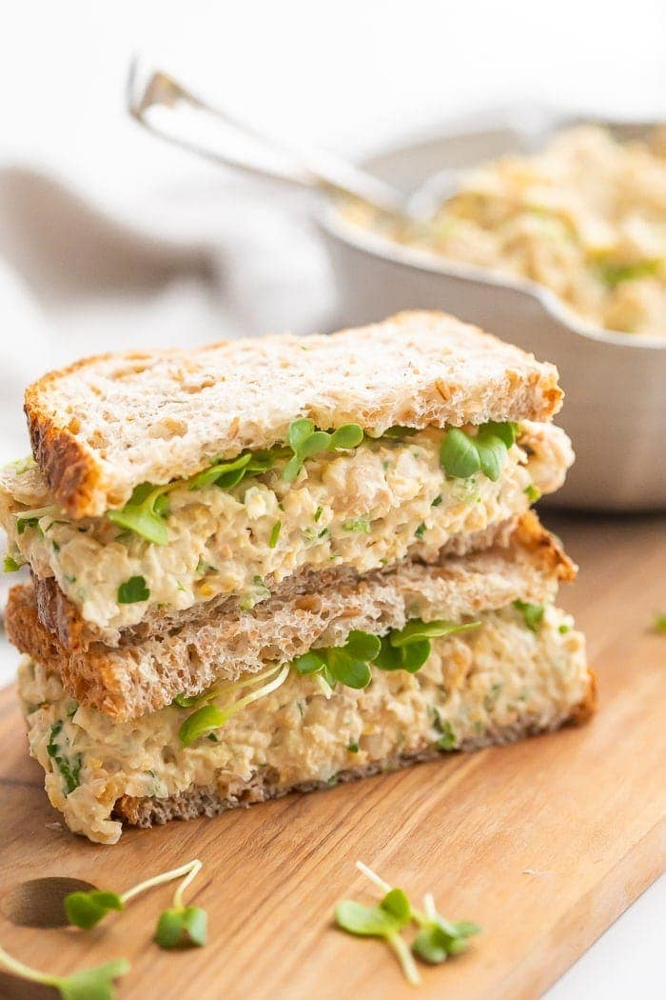

Chickpea Salad Sandwich

Ingredients
- 1 can of chickpeas
- vegan mayonase
- several green olives
- 1 heaping tablespoon of nutritional yeast
- 1 pickle
Instructions
- drain can of chickpeas. liquid can be saved for other recipes.
- put chickpeas into food processor. make them mushy while keeping them lumpy
- add in the nutrional yeast, chunked up pickle, and olives. make coinsistently chunky
- it is easier to mix in the mayo, in a bowl. so do that.
- chill and server, in a sandwich.
Home